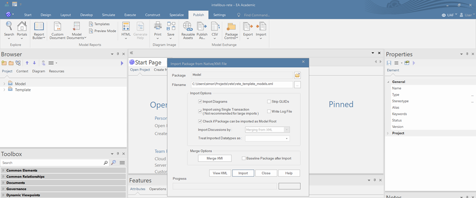
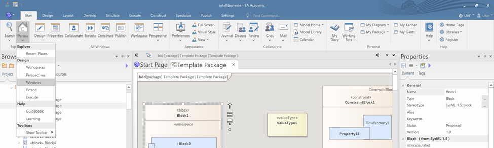
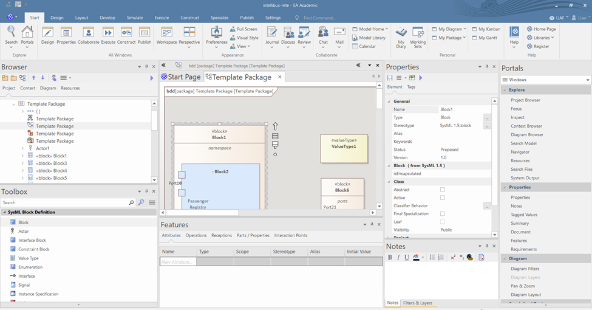
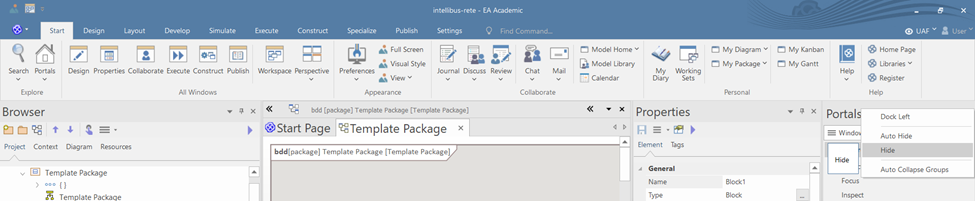
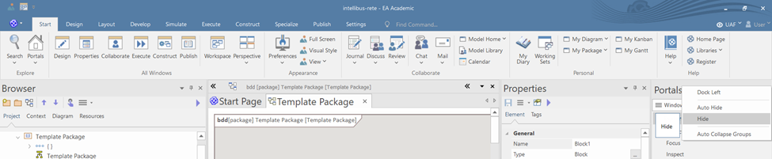
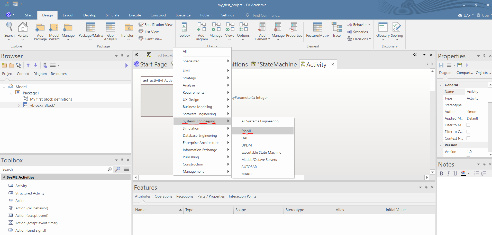
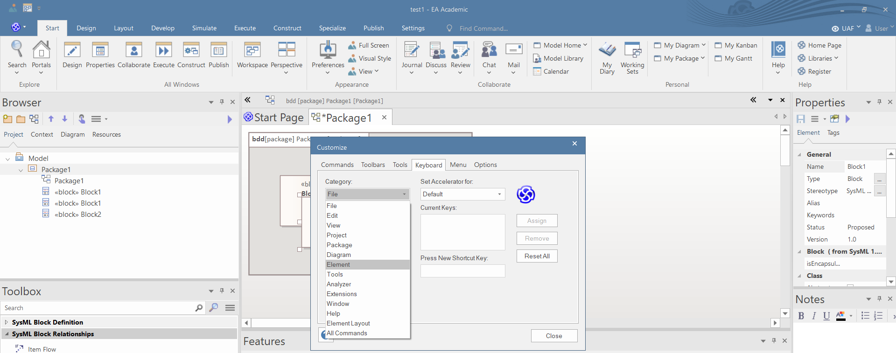
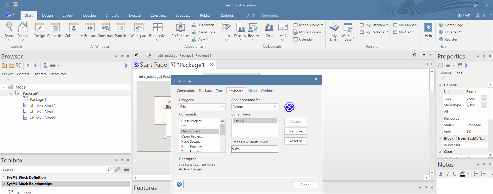

Előzetes lépések
Template package beállítása
OK: A SysML diagrammokon alapértelmezetten minden compartment engedélyezve van. Ez azért egy hatalmas probléma mert ha készítesz egy tökéletes diagrammot és később a diagrammokon lévő elemeknek új property-jei lesznek akkor azok alapértelmezetten megjelennek a compartment-ben és az összes elem átméreteződik. A compartment-eket csak egy speciálisan elkészített tamplate package-dzsel lehet megakadályozni, amit előre kidolgoztam.
- A Publish fülön válaszd ki az Import-nél az alábbi linkről letőltött XMI File…-t (link).

- A felugró ablakban válaszd ki a kiexportált template package-ta Filename mezőben és nyomd meg az import-ot. Az import során felugrik egy ablak ahol Yes-t kell választani. 
- A Settings fülön, válaszd ki a Project Template Package menüpontot.

- Válaszd ki a beimportált template package-t és nyomd meg az OK-t.

- Start fülön a Preferences menüpontban az Other preferences-nél a felugró ablakban állítsd be a Auto-resize marks diagram ’dirty’-t ugyanis ezzel a lépéssel az autoresize CTRL-Z-vel (nem minden esetben, de) visszaállítható

{kind=link}
Ablakok beállítása
A programozói környezetekhez hasonlóan itt is sok féle ablak van, ahol mindenféle beállítást találtokaz alábbi öt ablak a legfontosabb: * Browser: itt lehet a modell struktúrájában navigálni * Toolbox: az éppen szerkesztett diagrammhoz való paletta * Features: az éppen kiválasztott modell elem által tartalmazott más modell elemek összefoglaló ablakja * Notes: az éppen kiválasztott modell elemhez note-ot lehet vele tenni * Properties: az éppen kiválasztott modell elem alapvető tulajdonságait tudjuk beállítani, itt sokszor az elem típusától függően több tab is van, a tab-ok között sokszor véletlenszerűen vannak szétszórva a beállítások ezért érdemes mindegyiket megnézni
{kind=link}
Ablakok beállításának lépései:
1. A Start fülön a Portals menüpontban ki kell választani a Windows-t

2. A felugró ablakban ki kell választani a azokat az ablakokat amiket szeretnénk használni (érdemes kísérletezni).

3. Az ablakokat a tetejüknél fogva mozgassuk a nekünk tetsző helyre.
 4. A Portals ablakot tüntessük el úgy, hogy a tetején jobb klikkelünk és a hide-t választjuk.

4. A Portals ablakot tüntessük el úgy, hogy a tetején jobb klikkelünk és a hide-t választjuk.

{kind=link}
{kind=link}
{kind=link}
Nézet beállítása
A különböző nézetek segítségével a létrehozandó elemek és diagrammok típusainak körét le tudjuk szűkíteni attól függően, hogy milyen modellezési feladatot kell elvégeznünk. Ennek motivációja, hogy az EA-ban nagyon sok féle UML alapú modellezési nyelv érhető el és ha például rendszer modellezést akarunk csinálni akkor tipikusan SysML-t akarunk használni nem pedig BPML-t vagy UML-t.
- Kattints a menü ikonra a toolbox jobb felső sarkában és válaszd ki a Change Perspective-t.

- Ezután válaszd ki a Systems Engineering menüpontban a SysML-t. 
{kind=link}
Használati tippek
Hasznos shortcut-ok
Az EA hatékony használatához elengedhetetlen a legfontosabb gyorsbillentyűk ismerete. A legfontosabb gyorsbillentyűk használatával jelentősen gyorsíthatjuk a modellezés folyamatát. A legfontosabb gyorsbillentyűk az alábbiak:
- Del: törlés és választás vizuális és valódi törlés között, ha vizuális a törlés, csak a diagrammon lesz változás, a mögöttes modellelem megmarad
- CTRL+Del: valódi törlés, nem csak a diagrammon lesz változás, a mögöttes modellelem is törlődik
- CTRL+C és SHIFT+Insert: vizuális copy-paste, csak a diagrammon lesz változás, a mögöttes modellelem változatlan
- CTRL+C és CTRL+SHIFT+V: valódi copy-paste, nem csak a diagrammon lesz változás, a mögöttes modellelem is megváltozik
- CTRL+N: új elem/diagram létrehozása
- CTRL+M: új model elem hozzáadása a kiválasztott package-hez
- CTRL+SHIFT+Y: kiválasztott modell elemen a compartment-ek megjelenésének engedélyeztetése
- CTRL+Z: Vizuális undo (sajnos valódi undo nincs EA-ban)
- AltGr: A kiválasztott elemhez ugrik a Browser-ben
- AltGr+G: A kiválasztott porty/port/attributy típusához ugrik a model explorer-ben
- F2: kiválasztott modell elem átnevezése
- F3: a legutoljára létrehozott kapcsolat típusából lerakni még egyet (például ha utoljára generalization kapcsolatot tettél egy BDD-ra akkor ezzel a paranccsal mé egy generalization-t tudsz bekötni)
- SHIFT+F3: a legutoljára létrehozott elem típusából lerakni még egyet (például ha utoljára block-ot tettél egy BDD-ra akkor ezzel a paranccsal mé egy block-ot tudsz lerakni)
Shortcut-ok beállítása
- A Start fülön a Preferences menüpontban kattints az Other Options-ra

- A felugró ablakban menj rá a Keyboard menüpontra és kategóriánként megnézheted, hogy milyen parancsokat lehet gyorsbillentyűvel elérni. 
- A Press New Shortcut Key mezőbekattintva a kívánt kombinációt lenyomva, majd az Assign gombra rákattintva lehet új billentyű kombinációra átteni a parancsot. 
{kind=link}
{kind=link}
Tippek a diagram rajzolásához
- Minden elem a diagrammon jelen nagyjából kétszer akkora, mint minimálisan szükséges. A túl kicsi modell elemeket az EA automatikusan átméretezi. Főleg a kicsi magasság a kritikus.
- Érdemes először BDD diagrammot készíteni és azokon előre mindent specifikálni amire később szükség lehet.
- A diagrammokat MINDIG úgy kell létre hozni, hogy a Browser-ben a tartalmazó modell elem fölé húzod az egeret és vagy
- jobb klikk és a „New diagram” kiválasztása
- CTRL+N és a „New diagram” kiválasztása
- NE helyezz BDD-re osztályt mert a diagram layout teljesen felborul
- Ha egy elemet behúzol a Browser-ből a diagrammra akkor felugrik egy ablak, hogy Link/Property/Instance/Port/stb… formájában szeretnéd-e betenni a diagrammra. Ez nagyon kényelmes és gyors módja a property-k, port-ok,… létrehozásának.
- Ha valamilyen modell elemet mozgatsz és lenyomod a CTRL-t akkor azt a modell elemet modell szerint lemásolja
- A Layout fülön a "Diagram Layout/Auto Route" parancs elég jól beállítja a relációk vonalvezetését ésrouting-ját adiagrammokon.
- Ha kijelölsz egy relációt akkor jobb klikk "Line Style" menüpontban tudod beállítani, hogy egyenes, szögletes vagy cikk-cakkos vonalvezetési stílust szeretnél. Ha jobb klikk után az "Apply Line Style on Diagram"-t választod akkor a diarammon az összes azonos típusú reláció stílusát be tudod állítaniegyszerre.